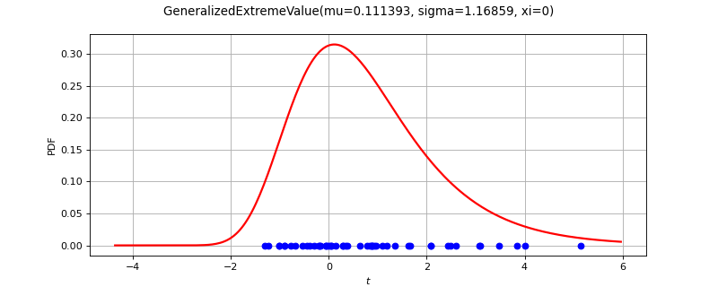

GeneralizedExtremeValueFactory¶
(Source code, png)

- class GeneralizedExtremeValueFactory(*args)¶
GeneralizedExtremeValue factory.
See also
Methods
build(*args)Estimate the distribution as a
Frechet,GumbelorWeibullMaxdistribution.Estimate the distribution as a
Frechet,GumbelorWeibullMaxdistribution.buildEstimator(*args)Build the distribution and the parameter distribution.
Estimate the distribution from the
 largest order statistics.
largest order statistics.Estimate the distribution and the parameter distribution with the R-maxima method.
Estimate the distribution with the profile likelihood.
Estimate the distribution and the parameter distribution with the profile likelihood.
buildReturnLevelEstimator(result, m)Estimate a return level and its distribution from the GEV parameters.
buildReturnLevelProfileLikelihood(sample, m)Estimate a return level and its distribution with the profile likelihood.
Estimate
 and its distribution with the profile likelihood.
and its distribution with the profile likelihood.buildTimeVarying(*args)Estimate a non stationary GEV.
Accessor to the bootstrap size.
Accessor to the object's name.
getId()Accessor to the object's id.
getName()Accessor to the object's name.
Accessor to the object's shadowed id.
Accessor to the object's visibility state.
hasName()Test if the object is named.
Test if the object has a distinguishable name.
setBootstrapSize(bootstrapSize)Accessor to the bootstrap size.
setName(name)Accessor to the object's name.
setShadowedId(id)Accessor to the object's shadowed id.
setVisibility(visible)Accessor to the object's visibility state.
- __init__(*args)¶
- build(*args)¶
Estimate the distribution as a
Frechet,GumbelorWeibullMaxdistribution.Available usages:
build(sample)
build(param)
- Parameters:
- sample2-d sequence of float
The block maxima sample of dimension 1.
- paramCollection of
PointWithDescription A vector of parameters of the distribution.
- Returns:
- distribution
GeneralizedExtremeValue The estimated distribution.
- distribution
Notes
The strategy consists in fitting the three models
Frechet,GumbelandWeibullMaxon the data. Then, the three models are classified with respect to the BIC criterion. The best one is returned.
- buildAsGeneralizedExtremeValue(*args)¶
Estimate the distribution as a
Frechet,GumbelorWeibullMaxdistribution.Same as
build().
- buildEstimator(*args)¶
Build the distribution and the parameter distribution.
- Parameters:
- sample2-d sequence of float
Sample from which the distribution parameters are estimated.
- parameters
DistributionParameters Optional, the parametrization.
- Returns:
- resDist
DistributionFactoryResult The results.
- resDist
Notes
According to the way the native parameters of the distribution are estimated, the parameters distribution differs:
Moments method: the asymptotic parameters distribution is normal and estimated by Bootstrap on the initial data;
Maximum likelihood method with a regular model: the asymptotic parameters distribution is normal and its covariance matrix is the inverse Fisher information matrix;
Other methods: the asymptotic parameters distribution is estimated by Bootstrap on the initial data and kernel fitting (see
KernelSmoothing).
If another set of parameters is specified, the native parameters distribution is first estimated and the new distribution is determined from it:
if the native parameters distribution is normal and the transformation regular at the estimated parameters values: the asymptotic parameters distribution is normal and its covariance matrix determined from the inverse Fisher information matrix of the native parameters and the transformation;
in the other cases, the asymptotic parameters distribution is estimated by Bootstrap on the initial data and kernel fitting.
- buildMethodOfLikelihoodMaximization(sample, r=0)¶
Estimate the distribution from the
largest order statistics.Let us suppose we have a series of independent and identically distributed variables and that data are grouped into
 blocks. In each block, the largest
blocks. In each block, the largest  observations are recorded.
observations are recorded.We define the series
![M_i^{(R)} = (z_i^{(1)}, \hdots, z_i^{(R)})]() for
for  where the values are sorted
in decreasing order.
where the values are sorted
in decreasing order.The estimator of
 maximizes the log-likelihood built from the largest order statisctics, with
maximizes the log-likelihood built from the largest order statisctics, with  defined as:
defined as:If
 , then:
, then:(1)¶
![\ell(\mu, \sigma, \xi) = -nr \log \sigma - \sum_{i=1}^n \biggl[ 1 + \xi \Bigl( \frac{z_i^{(r)} - \mu }{\sigma} \Bigr) \biggr]^{-1/\xi} -\left(\dfrac{1}{\xi} +1 \right) \sum_{i=1}^n \sum_{k=1}^r \log \biggl[ 1 + \xi \Bigl( \frac{z_i^{(k)} - \mu }{\sigma} \Bigr) \biggr]]()
defined on
such that ![1+\xi \left( \frac{z_i^{(k)} - \mu}{\sigma} \right) > 0]() for all
for all  and
and  .
.If
 , then:
, then:(2)¶
![\ell(\mu, \sigma, \xi) = -nr \log \sigma - \sum_{i=1}^n \exp \biggl[ - \Bigl( \frac{z_i^{(r)} - \mu }{\sigma} \Bigr) \biggr] - \sum_{i=1}^n \sum_{k=1}^r \Bigl( \frac{z_i^{(k)} - \mu }{\sigma} \Bigr)]()
- Parameters:
- sample2-d sequence of float
Block maxima grouped in a sample of size
and dimension .- rint, ,
Number of largest order statistics taken into account among the
stored ones.By default,
 which means that all the maxima are used.
which means that all the maxima are used.
- Returns:
- distribution
GeneralizedExtremeValue The estimated distribution.
- distribution
- buildMethodOfLikelihoodMaximizationEstimator(sample, r=0)¶
Estimate the distribution and the parameter distribution with the R-maxima method.
The estimators are defined using the profile log-likelihood as detailed in
buildMethodOfLikelihoodMaximization().The result class produced by the method provides:
the GEV distribution associated to
 ,
,the asymptotic distribution of
.
- Parameters:
- sampleM2-d sequence of float
Block maxima grouped in a sample of size
and dimension .- rint, , optional
Number of order statistics taken into account among the
stored ones.By default,
which means that all the maxima are used.
- Returns:
- result
DistributionFactoryLikelihoodResult The result class.
- result
- buildMethodOfProfileLikelihoodMaximization(sample)¶
Estimate the distribution with the profile likelihood.
The estimator
is defined using a nested numerical optimization of the log-likelihood:![\ell_p (\xi) = \max_{(\mu, \sigma)} \ell (\mu, \sigma, \xi)]()
where
 is detailed in equations (1) and (2) with
is detailed in equations (1) and (2) with  .
.The estimator is given by:
![\begin{align*}
\hat{\xi} & = \argmax_{\xi} \ell_p(\xi)\\
(\hat{\mu}, \hat{\sigma}) & = \argmax_{(\mu, \sigma)} \ell(\mu, \sigma, \hat{\xi})
\end{align*}]()
- Parameters:
- sample2-d sequence of float
The block maxima sample of dimension 1.
- Returns:
- distribution
GeneralizedExtremeValue The estimated distribution.
- distribution
Notes
The starting point of the optimization is initialized from the probability weighted moments method, see [diebolt2008].
- buildMethodOfProfileLikelihoodMaximizationEstimator(sample)¶
Estimate the distribution and the parameter distribution with the profile likelihood.
The estimators are defined in
buildMethodOfProfileLikelihoodMaximization().The result class produced by the method provides:
the GEV distribution associated to
,the asymptotic distribution of
,the profile log-likelihood function
 ,
,the optimal profile log-likelihood value
 ,
,confidence intervals of level
 of
of  .
.
- Parameters:
- sample2-d sequence of float
The block maxima sample of dimension 1.
- Returns:
- result
ProfileLikelihoodResult The result class.
- result
- buildReturnLevelEstimator(result, m)¶
Estimate a return level and its distribution from the GEV parameters.
The
 -return level
-return level  is the level exceeded on average once every blocks. The parameter is referred to as the return period. For example, if the GEV distribution is the distribution of the annual maxima, then
is the level exceeded on average once every blocks. The parameter is referred to as the return period. For example, if the GEV distribution is the distribution of the annual maxima, then  is the 100-year return period and is exceeded on average once in every century.
is the 100-year return period and is exceeded on average once in every century.The
-return level is defined as the quantile of order  of the GEV distribution.
of the GEV distribution.If
:(3)¶
![z_m = \mu - \frac{\sigma}{\xi} \left[ 1- (-\log(1-p))^{-\xi}\right]]()
If
:(4)¶
![z_m = \mu - \sigma \log(-\log(1-p))]()
The estimator
 of is deduced from the estimator of .
of is deduced from the estimator of .The asymptotic distribution of
 is obtained by the Delta method from the asymptotic distribution of
. It is a normal distribution with mean and variance:
is obtained by the Delta method from the asymptotic distribution of
. It is a normal distribution with mean and variance:![\Var{z_m} = (\nabla z_m)^T \mat{V}_n \nabla z_m]()
where
![\nabla z_m = (\frac{\partial z_m}{\partial \mu}, \frac{\partial z_m}{\partial \sigma}, \frac{\partial z_m}{\partial \xi})]() and
and  is the asymptotic covariance of .
is the asymptotic covariance of .- Parameters:
- result
DistributionFactoryResult Likelihood estimation result of a
GeneralizedExtremeValue- mfloat
The return period expressed in terms of number of blocks.
- result
- Returns:
- distribution
Distribution The asymptotic distribution of
.
- distribution
- buildReturnLevelProfileLikelihood(sample, m)¶
Estimate a return level and its distribution with the profile likelihood.
The estimator is defined using a nested numerical optimization of the log-likelihood:
![\ell_p (z_m) = \max_{(\mu, \sigma)} \ell (z_m, \sigma, \xi)]()
where
 is the log-likelihood detailed in (1) and (2) with and where we substitued
is the log-likelihood detailed in (1) and (2) with and where we substitued
 for using equations (3) or (4).
for using equations (3) or (4).The estimator
of is defined by:![\hat{z}_m = \argmax_{z_m} \ell_p(z_m)]()
The asymptotic distribution of
is normal.- Parameters:
- sample2-d sequence of float
The block maxima sample of dimension 1.
- Returns:
- distribution
Normal The asymptotic distribution of
.
- distribution
Notes
The starting point of the optimization is initialized from the regular maximum likelihood method.
- buildReturnLevelProfileLikelihoodEstimator(sample, m)¶
Estimate
and its distribution with the profile likelihood.The estimators are defined in
buildReturnLevelProfileLikelihood().The parameter estimates are given by:
![\begin{align*}
\hat{z}_m = \argmax_{z_m} \ell_p(z_m)\\
(\hat{\sigma}, \hat{\xi}) = \argmax_{(\sigma, \xi)} \ell(\hat{z}_m, \sigma, \xi)
\end{align*}]()
The result class produced by the method provides:
the GEV distribution associated to
 ,
,the asymptotic distribution of
,the profile log-likelihood function
 ,
,the optimal profile log-likelihood value
 ,
,confidence intervals of level
of .
- Parameters:
- sample2-d sequence of float
The block maxima sample of dimension 1.
- mfloat
The return period, defines the level of the quantile as
 .
.
- Returns:
- result
ProfileLikelihoodResult The result class.
- result
- buildTimeVarying(*args)¶
Estimate a non stationary GEV.
We consider a non stationary GEV model to describe the distribution of
 :
:![Z_t \sim \mbox{GEV}(\mu(t), \sigma(t), \xi(t))]()
We have the values of
on the time stamps  .
.For numerical reasons, it is recommended to normalize the time stamps. OpenTURNS applies the following mapping:

and with three ways of defining
 :
:the CenterReduce method where
 is the mean time stamps
and
is the mean time stamps
and ![d = \sqrt{\dfrac{1}{n} \sum_{i=1}^n (t_i-c)^2}]() is the standard deviation of the time stamps;
is the standard deviation of the time stamps;the MinMax method where
 is the first time and
is the first time and  the range of the time stamps;
the range of the time stamps;the None method where
 and
and  : in that case, data are not normalized.
: in that case, data are not normalized.
Each of
 has an expression in terms of a parameter vector and time functions:
has an expression in terms of a parameter vector and time functions:![\theta(t) = h\left(\sum_{i=1}^{d_{\theta}} \beta_i^{\theta} \varphi_i^{\theta}(\tau(t))\right)]()
where:
 is usually referred to as the inverse-link function. The function
is usually referred to as the inverse-link function. The function  denotes
either
denotes
either  ,
,  or
or  ,
,each
 is a scalar function
is a scalar function  ,
,each
 .
.
We denote by
 ,
,  and
and  the size of the functional basis of
,
the size of the functional basis of
,  and respectively. We denote by
and respectively. We denote by
![\vect{\beta} = (\beta_1^{\mu}, \dots, \beta_{d_{\mu}}^{\mu}, \beta_1^{\sigma}, \dots, \beta_{d_{\sigma}}^{\sigma}, \beta_1^{\xi}, \dots, \beta_{d_{\xi}}^{\xi})]() the complete vector of parameters.
the complete vector of parameters.The estimator of
 maximizes the likelihood of the non stationary model which is defined by:
maximizes the likelihood of the non stationary model which is defined by:![L(\vect{\beta}) = \prod_{t=1}^{n} g(z_{t};\mu(t), \sigma(t), \xi(t))]()
where
![g(z_{t};\mu(t), \sigma(t), \xi(t))]() denotes the GEV density function with parameters
evaluated at
denotes the GEV density function with parameters
evaluated at  .
.Then, if none of the
is zero, the log-likelihood is defined by:![\ell (\vect{\beta}) = -\sum_{t=1}^{n} \left\{ \log(\sigma(t)) + (1 + 1 / \xi(t) ) \log\left[ 1+\xi(t) \left( \frac{z_t - \mu(t)}{\sigma(t)}\right) \right] + \left[ 1 + \xi(t) \left( \frac{z_t- \mu(t)}{\sigma(t)} \right) \right]^{-1 / \xi(t)} \right\}]()
defined on
such that  for all
for all  .
.And if any of the
is equal to 0, the log-likelihood is defined as:![\ell (\vect{\beta}) = -\sum_{t=1}^{n} \left\{ \log(\sigma(t)) + \frac{z_t - \mu(t)}{\sigma(t)} + \exp \left\{ - \frac{z_t - \mu(t)}{\sigma(t)} \right\} \right\}]()
The initialization of the optimization problem is crucial. OpenTURNS proposes two initial points
 :
:the Gumbel initial point: in that case, we assume that the GEV is a stationary Gumbel distribution and we deduce
 from the mean
from the mean  and standard variation
and standard variation  of the data:
of the data:
 and
and  where
where
 is Euler’s constant;
is Euler’s constant;the Static initial point: in that case, we assume that the GEV is stationary and
is the maximum likelihood estimate resulting from that assumption.
The result class produced by the method provides:
the estimator
 ,
,the asymptotic distribution of
,the parameter functions
 ,
,the normalizing function
 ,
,the optimal log-likelihood value
,the GEV distribution at time
,the quantile functions of order
 :
: ![t \mapsto q_p(\mbox{GEV}(\hat{\mu}(t), \hat{\sigma}(t), \hat{\xi}(t))]() .
.
- Parameters:
- sample2-d sequence of float
The block maxima grouped in a sample of size
and one dimension.- timeStamps2-d sequence of float
Values of
.- basisCollectionsequence of class:~openturns.Basis
Collection of three functional basis respectively for
, and .- inverseLinkFunction
Function, optional The
 function.
function.- initializationMethodstr, optional
The initialization method for the optimization problem: Gumbel or Static.
By default, the Gumbel initial point is used.
- normalizationMethodstr, optional
The data normalization method: CenterReduce, MinMax or None.
By default, the MinMax method is used.
- Returns:
- result
TimeVaryingResult The result class.
- result
- getBootstrapSize()¶
Accessor to the bootstrap size.
- Returns:
- sizeinteger
Size of the bootstrap.
- getClassName()¶
Accessor to the object’s name.
- Returns:
- class_namestr
The object class name (object.__class__.__name__).
- getId()¶
Accessor to the object’s id.
- Returns:
- idint
Internal unique identifier.
- getName()¶
Accessor to the object’s name.
- Returns:
- namestr
The name of the object.
- getShadowedId()¶
Accessor to the object’s shadowed id.
- Returns:
- idint
Internal unique identifier.
- getVisibility()¶
Accessor to the object’s visibility state.
- Returns:
- visiblebool
Visibility flag.
- hasName()¶
Test if the object is named.
- Returns:
- hasNamebool
True if the name is not empty.
- hasVisibleName()¶
Test if the object has a distinguishable name.
- Returns:
- hasVisibleNamebool
True if the name is not empty and not the default one.
- setBootstrapSize(bootstrapSize)¶
Accessor to the bootstrap size.
- Parameters:
- sizeinteger
Size of the bootstrap.
- setName(name)¶
Accessor to the object’s name.
- Parameters:
- namestr
The name of the object.
- setShadowedId(id)¶
Accessor to the object’s shadowed id.
- Parameters:
- idint
Internal unique identifier.
- setVisibility(visible)¶
Accessor to the object’s visibility state.
- Parameters:
- visiblebool
Visibility flag.


{kind=link}